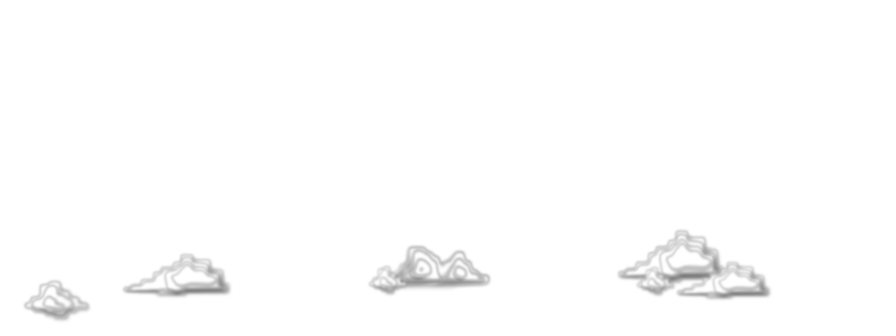
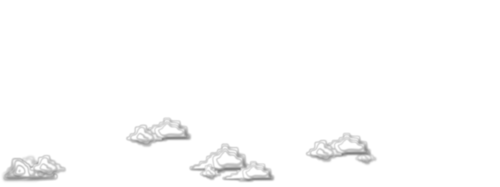
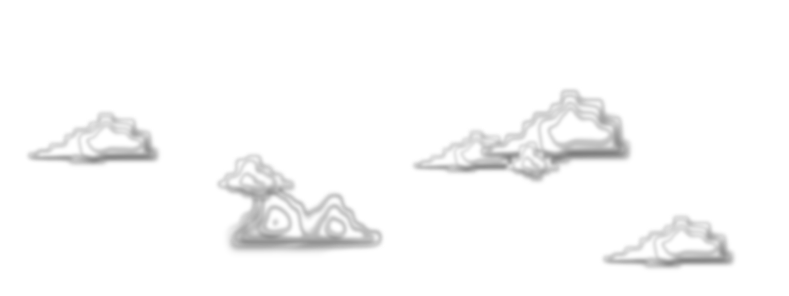
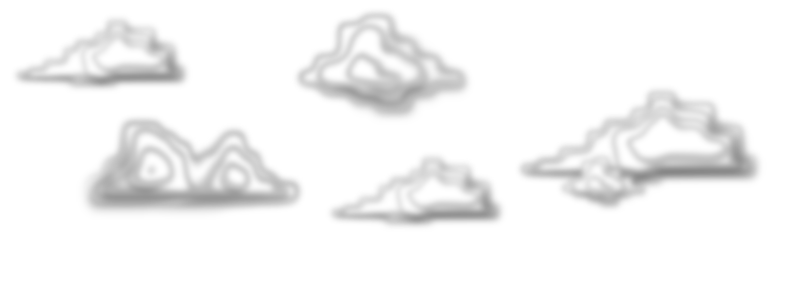

A parallax scrolling effect gives the perception of depth by making things closer to the viewer scroll at a faster rate than things that are farther away from the viewer. Can you simulate depth by making these four different layers of clouds scroll at different rates?
   